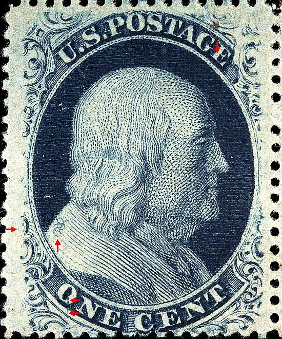
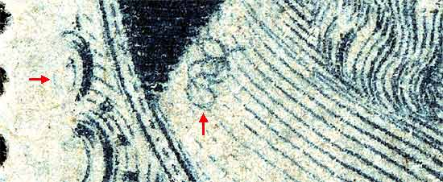
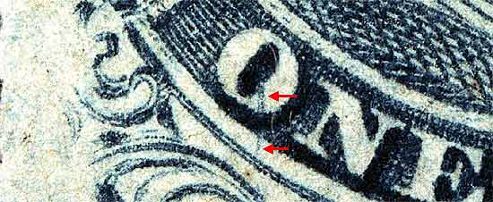
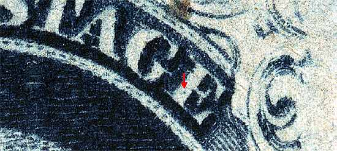

1¢ Franklin Issue of 1857-61, PLATE 7. Pos 59R7, (Scott #24) |
| Scott #24 Blue, Type V, Relief F, 6th Row Issued only perforated. CURL IN SHOULDER VARIETY Of all the Type V varieties perhaps the best known and the more sought after, are the interesting shoulder curls coming from the right pane of Plate 7, positions 57R, 58R, 59R, 97R, 98R and 99R7. Part of a block of four 49R, 50R, 59R, 60R7 |
|  |
| Figure 1. (Below) Close up view of the CURL. The curl found on Position 58R and 59R7 is very similar looking. The two can be distinguished by determining which row the subject is from. The 10th row can be identified by examining the right lower scroll, which is more complete than the scroll on the 6th row, which is short transferred. Also see other images below for additional plating marks.  |
| Figure 2. (Below) A near vertical plating mark in the O of ONE not illustrated in the Neinken plating diagrams will aid the plater in definitively confirming the position.
 |
| Figure 3. (Below) Small dot in the E of POSTAGE not illustrated in the plating diagrams. Note that this dot occurs on all 6 shoulder curl positions (57-58-59R7, 97-98-99R7), thus it is not useful in identifying the actual position.
 |
DISCLAIMER and COPYRIGHT INFORMATION: Thanks for visiting this site. I hope you learn something new as we are making new discoveries all the time. You, the visitor, have my permission to link to my pages and to share the INFORMATION with others. The images themselves fall under the fair use guidelines established by the United States Congress and Copyright law. Basically contact us before using. I also ask in return that you send me an e-mail if I have made a mistake, or have made some other technical blunder that in my rush to put these pages up would cause the visitor confusion. Please also visit my other website at www.slingshotvenus.com. and support the live music arts. While your there, be sure to purchase our music. There are not many philatelic rock stars around and we need all the help we can get. :-) I can be reached at: nerdman@ix.netcom.com Update 1/24/08 |